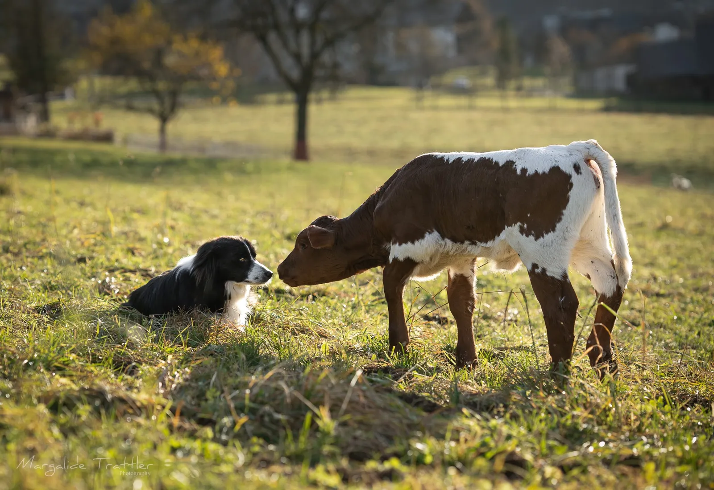
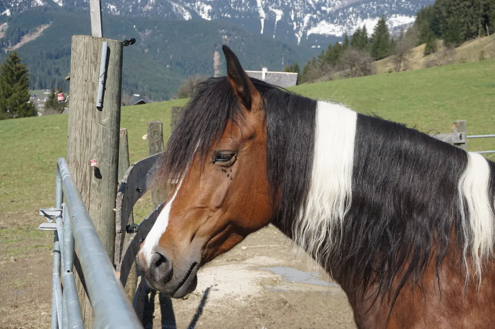
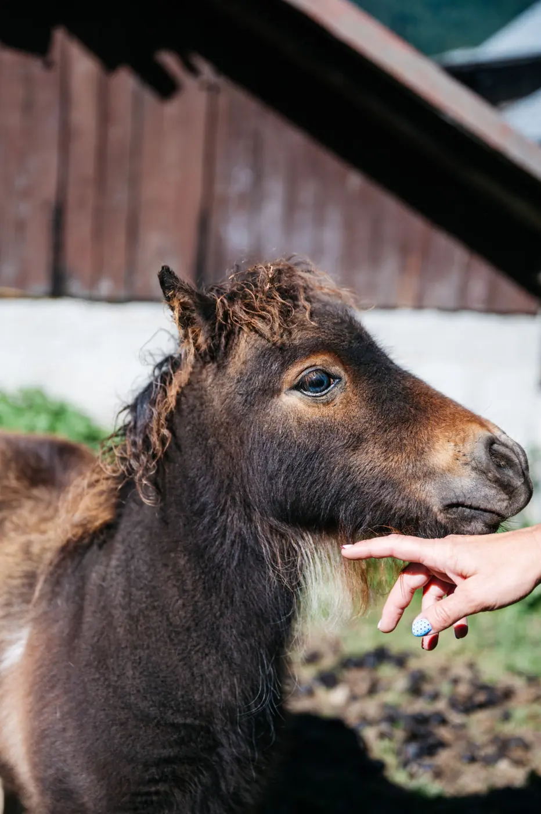

Esel
Mary & Emma
Hallo, wir sind Mary und Emma! Wir zwei sind unzertrennlich und lassen uns gern hinter den Ohren kraulen.
Wusstest du? Esel merken sich Gesichter jahrelang. Vielleicht erkennen wir dich beim nächsten Urlaub wieder!
Almromantik › Unsere Tiere
Unsere Tiere
Esel, Ponys, Kühe, Schafe, Hund, Katze und Enten: Lern unsere Tiere schon vor dem Urlaub kennen!

Hier stellen sich unsere Tiere selbst vor. Lies mit Mama oder Papa, wer wer ist, und such sie dann bei uns am Hof. Ganz unten wartet ein Suchspiel auf dich!
Esel
Hallo, wir sind Mary und Emma! Wir zwei sind unzertrennlich und lassen uns gern hinter den Ohren kraulen.
Wusstest du? Esel merken sich Gesichter jahrelang. Vielleicht erkennen wir dich beim nächsten Urlaub wieder!

Pferd
Ich bin Bella. Erkennst du mich an meiner weißen Mähnensträhne?
Wusstest du? Pferde können im Stehen schlafen.

Mini-Shetlandponys
Wir sind Maggy und Kleiner Donner: klein, wuschelig und neugierig. Kleiner Donner tobt am liebsten mit Hofhund Sky herum!
Wusstest du? Shetlandponys kommen von Inseln ganz im Norden von Schottland.

Hofhund
Wuff! Ich bin Sky und passe auf den ganzen Hof auf. Mein bester Spielkamerad ist Kleiner Donner.
Wusstest du? Hunde riechen viele tausend Mal besser als wir Menschen.

Pinzgauer Kühe
Muh! Wir sind die großen Pinzgauer Kühe. Unsere Kälber bleiben bei uns, bis sie groß sind.
Wusstest du? Im Sommer wandern wir hinauf auf die Alm, ganz in die Nähe unserer Almhütte.

Walliser Schwarznasenschafe
Mäh! Mit unseren schwarzen Nasen und dem dicken Fell sehen wir aus wie Kuscheltiere.
Wusstest du? Unsere Schafrasse kommt aus den Bergen im Wallis in der Schweiz.
Hofkatze
Miau, ich bin Freddy, schwarz-weiß wie ein Fußball. Ich mag es gemütlich und hab gern meine Ruhe.
Wusstest du? Katzen schlafen bis zu 16 Stunden am Tag.

Laufenten
Schnatter! Wir fliegen nicht, wir watscheln, und zwar ganz aufrecht.
Wusstest du? Laufenten können nicht fliegen, dafür laufen sie richtig flott.

Im Sommer sind unsere Tiere draußen auf der Weide, die Kühe sogar oben auf der Alm. Dort sind sie die Nachbarn unserer Almhütte.

Im Winter wohnen die Tiere im warmen Stall und werden jeden Tag gefüttert. Wer mag, darf mit in den Stall, Kinder und Erwachsene. Sag einfach Heike oder Martin Bescheid.
Hak jedes Tier ab, das du bei uns am Hof gesehen hast.
🎉 Super, du hast alle gefunden! Erzähl es Heike oder Martin.
Freie Termine sehen, Preis berechnen und sofort fix buchen.